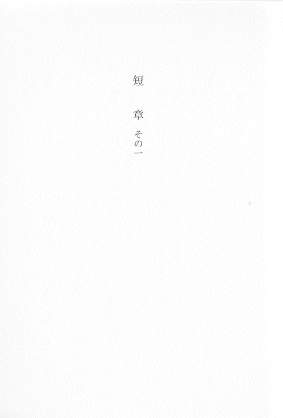
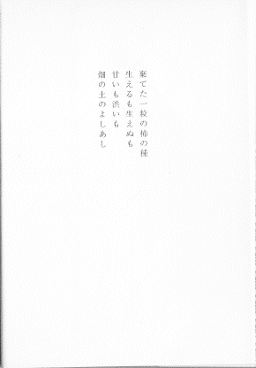
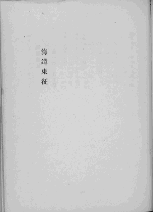

レイアウト ３
ページの左右中央に組んである処理
章名や献辞、数行の一節などだけを示したページではしばしば、左右中央に文字を置く組み版が行われます。
ここではこれを、「左右中央」と呼びます。
左右中央
作品の冒頭や、改丁、改ページの後で、ページの左右中央に組まれた文字列を入力する際には、まず［＃ページの左右中央］と書き込んでください。
そこから２行あけ、文字列を入力し、その後に再び２行あけてください。
左右中央のページから次のページに移る際にも、必ず改ページもしくは改丁処理が行われているはずです。
ページをあらためて、次のページからはじまっている際は、２行あきの後に、［＃改ページ］と注記してください。
ページをあらためて、右ページを空白とし、左ページから始まっている際は、２行あきの後に、［＃改丁］と注記してください。
章名が字下げされているときは、字下げ注記と見出し注記を組み合わせて書いてください。
※記入例の下に、テキスト版をスクリプトで変換して得た、XHTML 版のタグを示します。

▲ページの左右中央に、章名が組まれています。
記入例：
［＃ページの左右中央］
［＃３字下げ］短章 その一［＃「短章 その一」は中見出し］
［＃改ページ］
<span class="notes">［＃ページの左右中央］</span><br />
<br />
<br />
<div class="jisage_3" style="margin-left: 3em"><h4 class="naka-midashi"><a class="midashi_anchor" id="midashi260">短章 その一</a></h4></div>
<br />
<br />
<span class="notes">［＃改ページ］</span><br />
●ページの左右中央の例１。寺田寅彦「柿の種」岩波文庫、岩波書店、1997（平成9）年10月15日第9刷、9ページ
※左の組み版例では、「短 章」と字間が割ってあります。こうした体裁を整えるための単語内の空白は、記入例のように省いて入力します。
数行からなる文字列が字下げされている際は、まず左右中央の注記を行い、２行あけてから、字下げ注記を書き込んでください。

▲扉の左右中央に、５字下げで序が組まれています。
記入例：
［＃ページの左右中央］
［＃ここから５字下げ］
棄てた一粒の柿の種
生えるも生えぬも
甘いも渋いも
畑の土のよしあし
［＃ここで字下げ終わり］
［＃改ページ］
<span class="notes">［＃ページの左右中央］</span><br />
<br />
<br />
<div class="jisage_5" style="margin-left: 5em">
棄てた一粒の柿の種<br />
生えるも生えぬも<br />
甘いも渋いも<br />
畑の土のよしあし<br />
</div>
<br />
<br />
<span class="notes">［＃改ページ］</span><br />
●ページの左右中央の例２。寺田寅彦「柿の種」岩波文庫、岩波書店、1997（平成9）年10月15日第9刷、10ページ
左右中央から、右または左によせてある際は、行あきを調整して、かたよりを表現してください。
右に寄せてある場合は、［＃ページの左右中央］のあとのあきを１行に。［＃改ページ］または［＃改丁］の前のあきを３行にしてください。
左に寄せてある場合は、［＃ページの左右中央］のあとのあきを３行に、［＃改ページ］または［＃改丁］の前のあきを１行にしてください。

▲扉の左右中央から左に寄せて、大見出しが組まれています。
記入例：
［＃ページの左右中央］
［＃３字下げ］海道東征［＃「海道東征」は大見出し］
［＃改ページ］
<span class="notes">［＃ページの左右中央］</span><br />
<br />
<br />
<br />
<div class="jisage_3" style="margin-left: 3em"><h3 class="o-midashi"><a class="midashi_anchor" id="midashi360">海道東征</a></h3></div>
<br />
<span class="notes">［＃改ページ］</span><br />
●ページの左右中央から左に寄った例。北原白秋「白秋詩歌集 第二卷」河出書房、1941（昭和16）年2月19日、335ページ
目次にもどる。